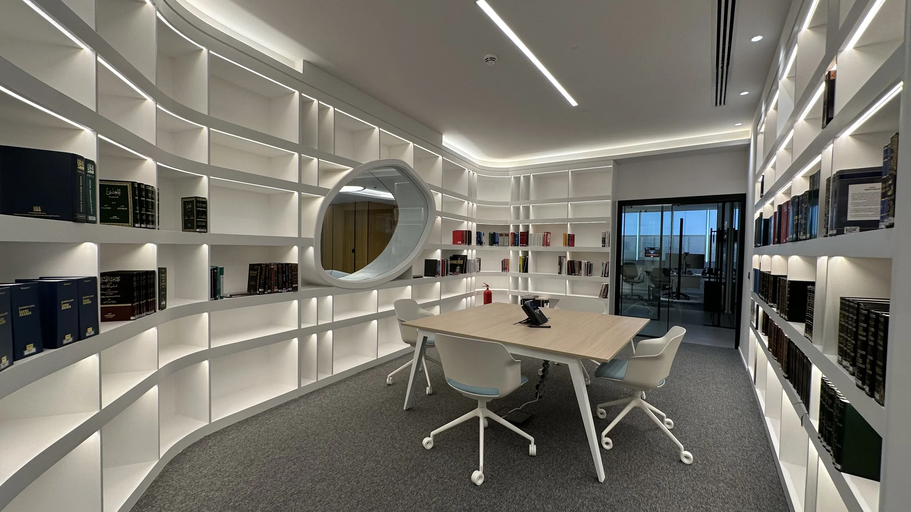
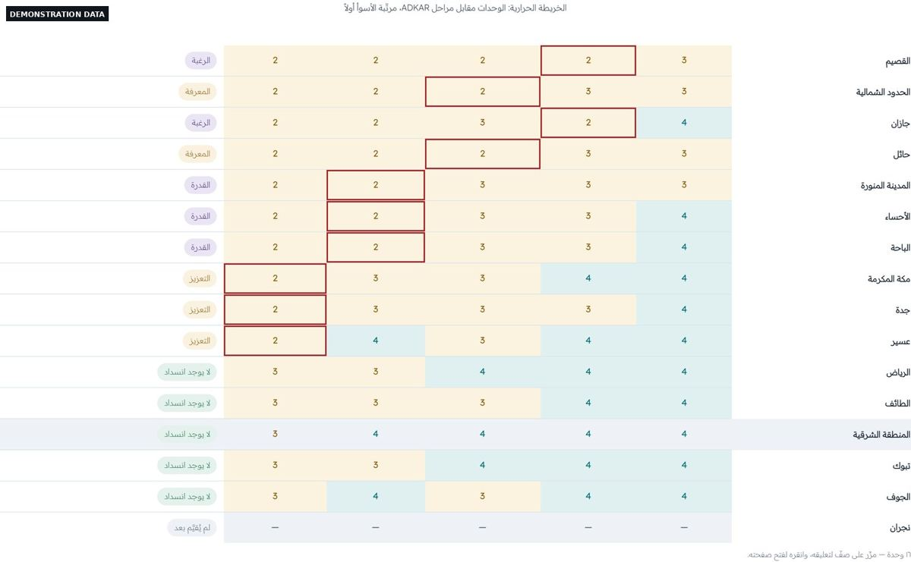
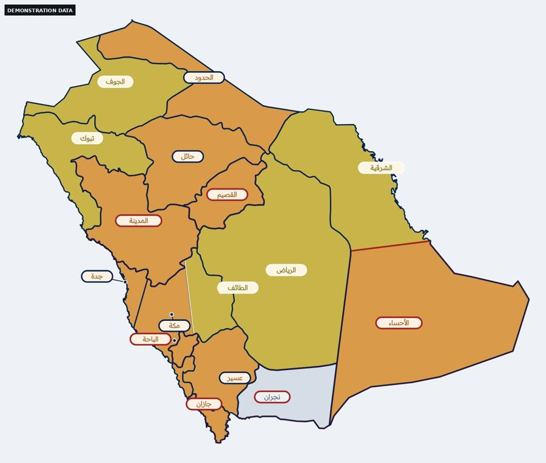
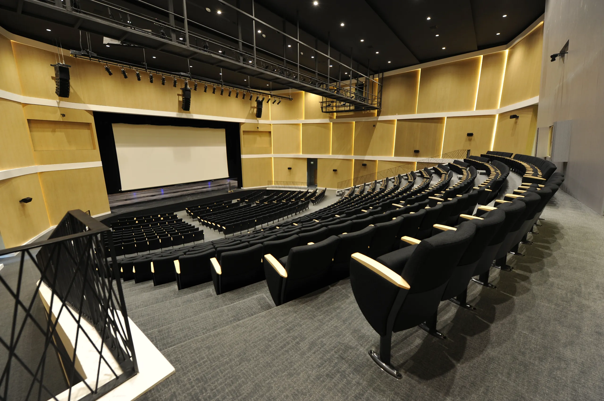
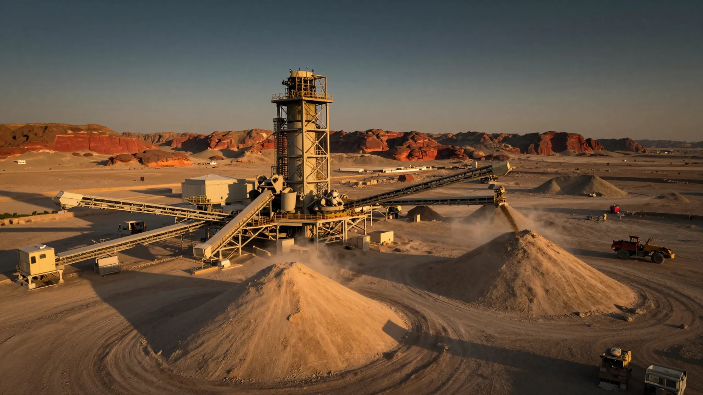

Abdulaziz Auqab Alharbi
Operations, dataand change management.
Business Administration graduate of Qassim University, now an Administrative Development Specialist through Tamheer, the national on-the-job training program, at a government body in public education. Below are five projects for school leadership programs across 16 education directorates, and a feasibility study for an industrial venture.
School leaders professional development program · 2026
Leadership trainee
management platform
30,000+
School principals and vice principals in one database.
Every figure traces back to its cell in the source Excel file.
16 directorates,
each with its own copy.
Each directorate sends its files in its own format, the numbers change every week, and leadership asks where every figure came from. I wrote a pipeline that reads the incoming Excel files, merges them into one database, assigns nominees to training groups, and publishes a copy for each directorate.
Problem
Sixteen directorates, each with its own files, sheets and column names, updated weekly.
What I built
An automated path from Excel to a single offline HTML file, plus a lineage log that keeps the file, sheet, row and column behind every value.
Result
Every number carries a "?" that opens its source, and the build flags data issues before figures reach leadership.
Figures rounded. The platform is internal because it holds personal data, so it has no public link.
- Python
- Excel
- SQLite
- JavaScript

Built during my Tamheer placement · since September 2026
ADKAR changemanagement platform
A team tracks a change program across 16 directorates from a single file, with no server.
The team had no server and no cloud service, and several members rate directorates at the same time. I built a single-file app that runs on the device, scores each leadership level on the five ADKAR stages, finds the first stage where each directorate is stuck, and merges the team's work without anyone overwriting a colleague.


About 15× faster
- JavaScript
- JSON Schema
- Word (OOXML)
- Claude Code
Tamheer placement · October 2026
Practitionertravel plan
About 130 travel missions for some 60 practitioners across 16 directorates over 14 weeks.
Two weeks in November carry over 40% of all missions. The plan flagged this early, so leadership knew when funding would be needed. It schedules every mission week by week, measures every route by road, checks each practitioner's documents, and costs three funding scenarios for leadership to choose from.
Source: travel plan, October 2026 version. Weeks nine and ten have no missions.
Shortest paved road via OSRM on OpenStreetMap. Locations are approximate.
- Excel
- OSRM
- OpenStreetMap
- Python

National education forum · September 2026
From a photo of the hallto a seat for every guest
The seating system for the first edition of a national forum held with an international university partner.
The forum hosted senior guests and an international partner, so seating had no room for error on the day. I built a browser tool that detects the chairs in a photo of the hall from one color sample, draws rows and zones over them, seats 120+ leaders, then prints the plan and a name card for every guest.
- Hall photo
- Click a chair color
- Seats, rows and zones
- Seat the guests
- Plan and name cards
Recognized with a certificate of appreciation and the forum shield.
The seating plan and name cards were ready on the morning of the event.
- JavaScript
- Canvas
- HEIC
Tamheer placement · July 2026
Leadershipdirectory
80+ leadership positions across 16 directorates, in one list within my first week.
As part of my role I coordinate between headquarters and the regional directorates, and there was no central list of who held each position. I built a workbook with seven sheets for the leadership categories and one that tracks each office's reply, so the team knows whom to follow up with today.
Names, phone numbers and emails stay inside the organization.

Qassim University · graduation project 2026
A Riyadh stone crusherwith an IRR above 60%
A feasibility study for the aggregate used in concrete, roads and buildings.
The crusher produces gravel, sand and crushed rock for Riyadh infrastructure projects. An investor needs its return and risks on one page, so I built the cash-flow model, computed NPV and IRR at a discount rate of about 5% and the payback period, and wrote a register of financial, operational and environmental risks with their mitigations.
About 57 percentage points above the minimum
Source: graduation feasibility study, Qassim University, 2026. In the same term: a research project on accounting information systems, with a survey of 90+ employees analyzed in SPSS.
- Excel
- SPSS
- LINDO
Contact
Six projects,
every number traceable to its source.
Details and sources for each project are available on request.